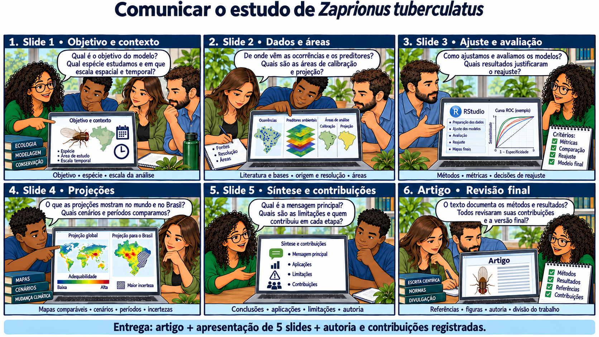

CAPÍTULO 16 · Comunicação · IMReD
Organizar as evidências para o artigo
A equipe reúne a pergunta, as decisões do roteiro e as saídas que sustentam cada afirmação.
Base no curso: slides 133–134; 471–487; 490–495.
A equipe volta ao primeiro registro de campo e à pergunta escrita no caderno. Agora organiza os arquivos da execução para preparar uma apresentação e um artigo. A história do estudo precisa continuar verificável para quem não participou da coleta nem viu a tela do RStudio.

Introdução e métodos
A introdução apresenta o problema, a lacuna e o objetivo. Nos métodos, a equipe descreve o que fez: registros de campo e fontes complementares, critérios de limpeza, preditores, domínio de calibração, partições, algoritmos e projeções. O caderno ODMAP e o relatório do script apoiam essa descrição.
tail(report.occ.df)
names(predictors.model)Resultados com origem identificada
As quantidades de registros vêm das tabelas de preparo; os modelos retidos vêm da seleção; as métricas vêm da avaliação configurada; os padrões espaciais vêm dos mapas e rasters. A equipe não troca números entre tentativas sem informar qual configuração os produziu.
| Parte do resultado | Evidência para conferir |
|---|---|
| Amostra e exclusões | Relatório de ocorrências e tabelas de revisão. |
| Preditores e algoritmos | Lista final de variáveis e resumos dos ajustes. |
| Avaliação | Métricas, predições da ROC, curvas e diagnósticos. |
| Presente e futuro | Rasters, mapas, cortes, configurações e tabelas de áreas. |
O mapa como comunicação
Cada figura deve responder a uma pergunta. A legenda informa variável, escala, corte e período; cenários futuros também identificam o SSP e os GCMs. A projeção cartográfica precisa ser adequada ao que se compara. Área em quilômetros quadrados não pode ser obtida tratando células em graus como unidades de área constante.
Discussão e conclusão
A discussão relaciona resultados, explicações alternativas e literatura. O grupo retoma o que foi observado no campo e o que foi inferido pelo modelo. A conclusão responde à pergunta dentro desse alcance: projeção de adequabilidade, ocupação observada e impacto são afirmações diferentes.
sessionInfo()O roteiro de artigo pode ser consultado no navegador. Os campos de resultados serão preenchidos com os valores da execução. As referências ajudam a localizar as fontes; o artigo deve citar as efetivamente utilizadas.
A apresentação de cinco slides
O grupo prepara: pergunta e espécie; dados e escolhas; avaliação; projeções e incertezas; conclusão e próximos passos. Em cada slide, uma afirmação principal aponta para sua evidência. A sequência encerra a simulação do uso do script e permite explicar o estudo a outra equipe.